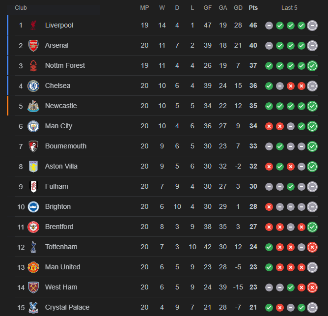

Latest News
The Reds beat current champions Manchester City
LFC 2 : 0 Manchester City
The Reds beat the current champions in a convincing display, with star man Mo Salah again playing a key role.
Fighting on all fronts
As we wrap up the year 2024, Liverpool top both the Premier League and the Champions League tables, whilst also remaining in both the Carabao Cup and FA Cup.
Transfer Rumours
Liverpool FC have been closely linked to Bayern Munich full-back Alphonso Davies, who is now a free agent. Liverpool are looking to improve their options at Left Back.